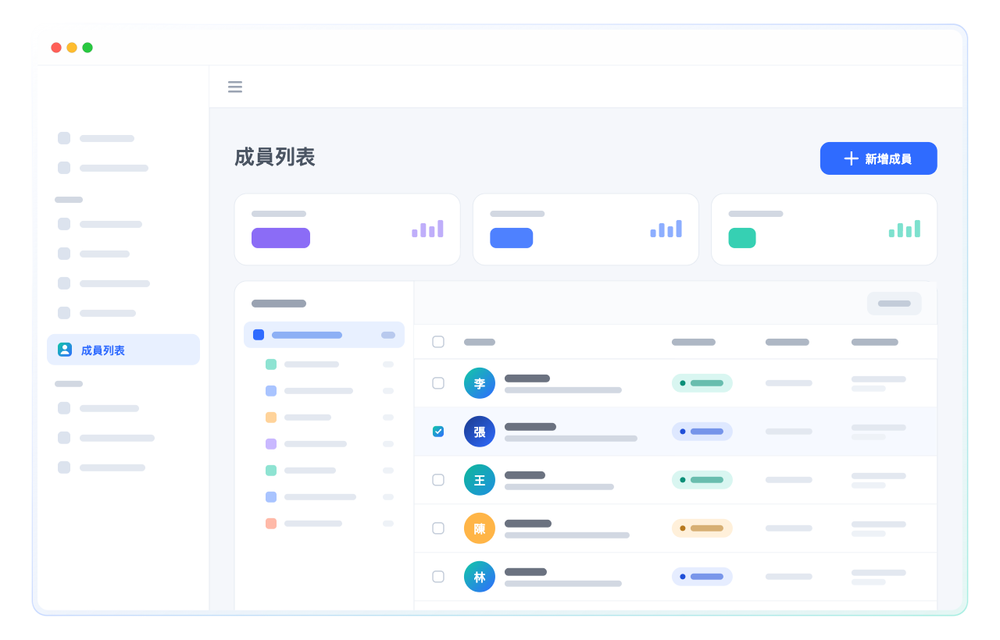
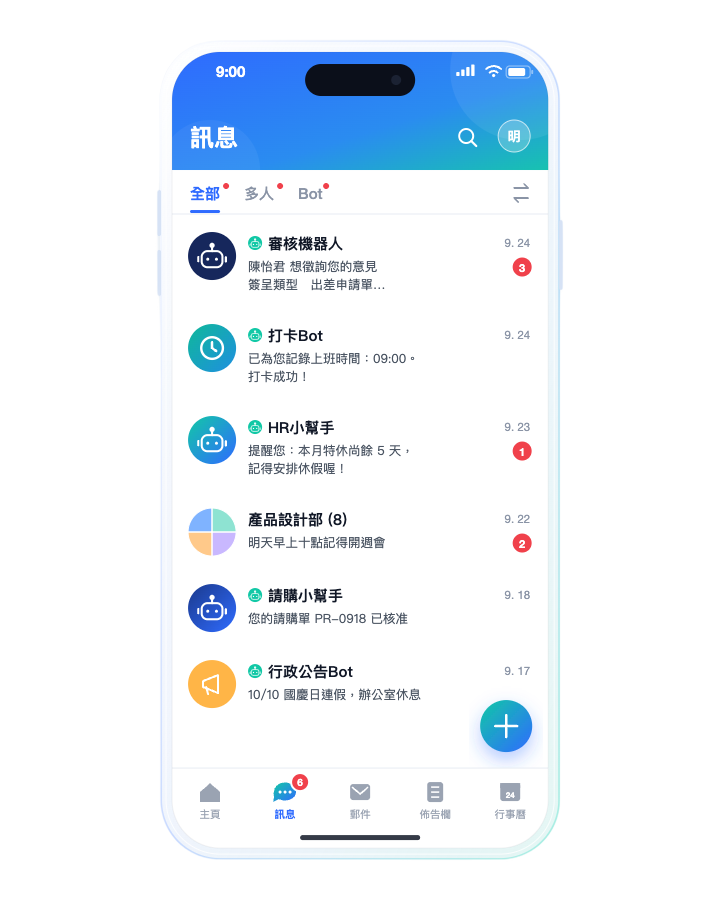
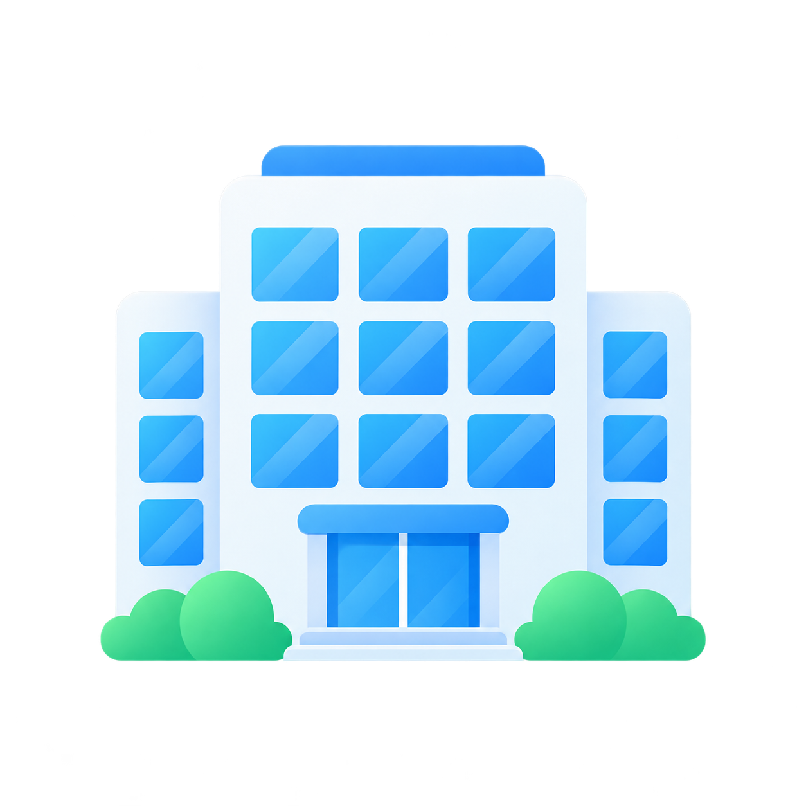
辦公室門市
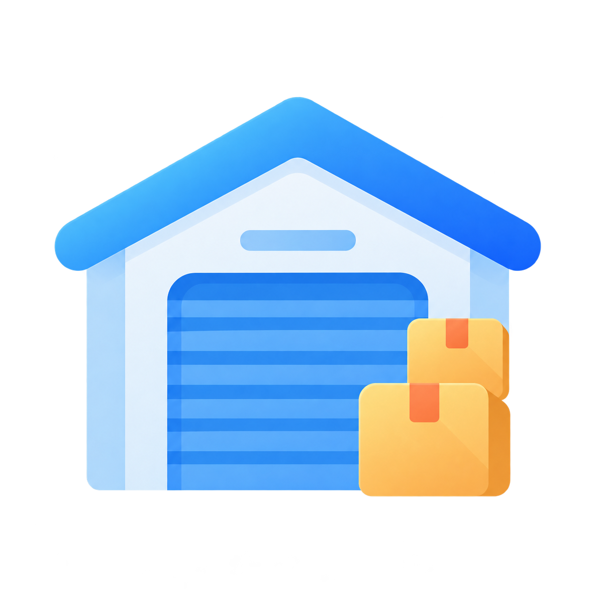
倉庫外勤
即時觸達
辦公室的一項作業
四個入口&四個斷點
THE FRICTION
企業資源多元
工作流程卻難以整合
- 01
企業流程散落在不同系統
通知、簽核、打卡與任務散落在不同工具。
- 02
企業資產分散
ERP、CRM、企業系統各自運作，資訊入口不一。
- 03
第一線人員溝通隔閡大
系統整合得再深，通知也只推得到辦公室；
門市、倉庫、外勤等第一線人員收不到。
WHY WORKSHUB+
從企業全場景管理，到流程自動運轉
把分散的資料與流程，轉化為員工可以直接採取的行動。
01
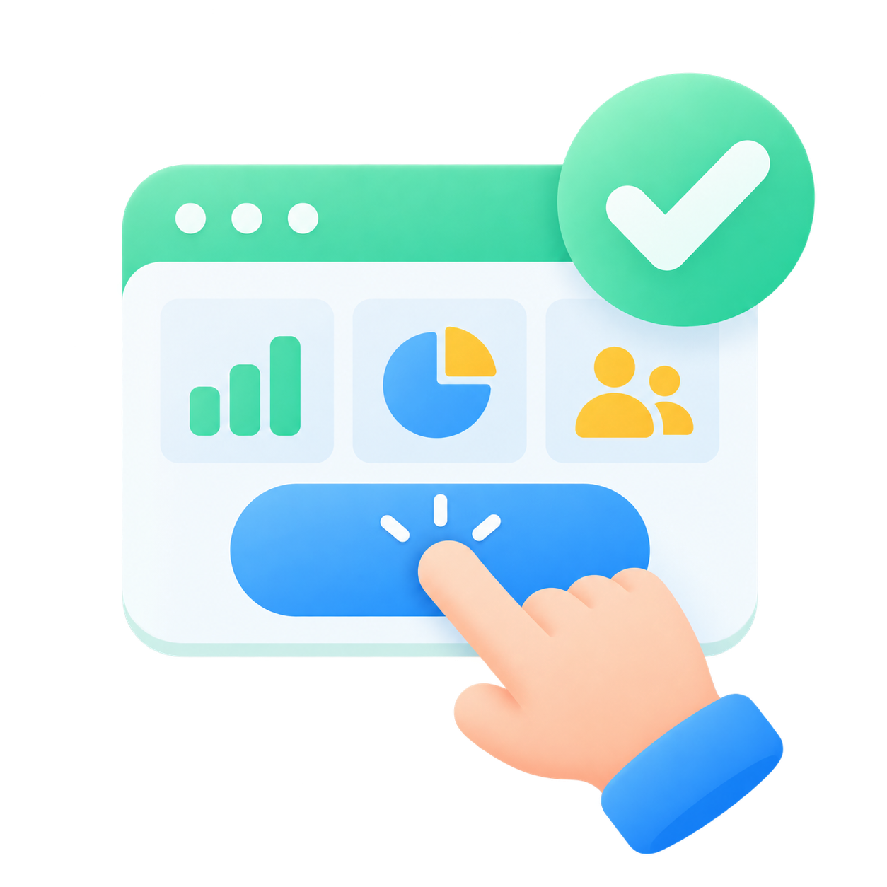
低門檻企業管理
HR／IT 不需等待工程資源，也能自主維護
組織、成員與日常權限。
02
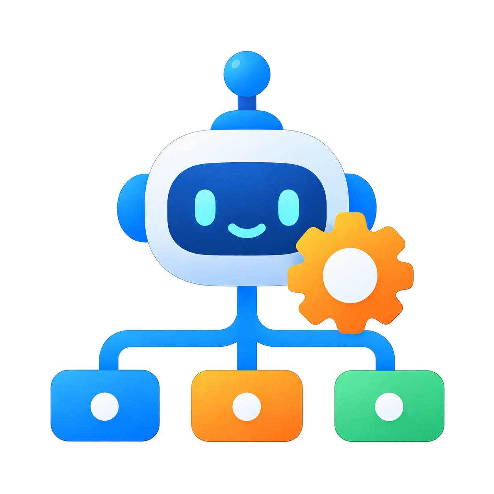
Bot 建構企業工作流
自動化設定管理，讓員工輕鬆收到
與完成工作任務。
03
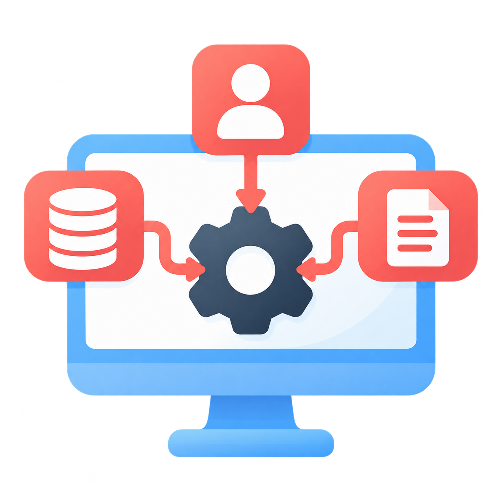
企業系統整合
串接 ERP、CRM、HRM，
在正確時機把資料送給正確的人。
HOW IT WORKS
不管坐辦公室，還是在第一線，重要的事都不會漏接
WorksHub+ 不取代原有系統，協助企業把資料與服務整合到 LINE WORKS
01・公司裡發生的事
從現場到辦公室，每一件待處理的事
02・WorksHub+
自動判斷該通知誰、送給誰
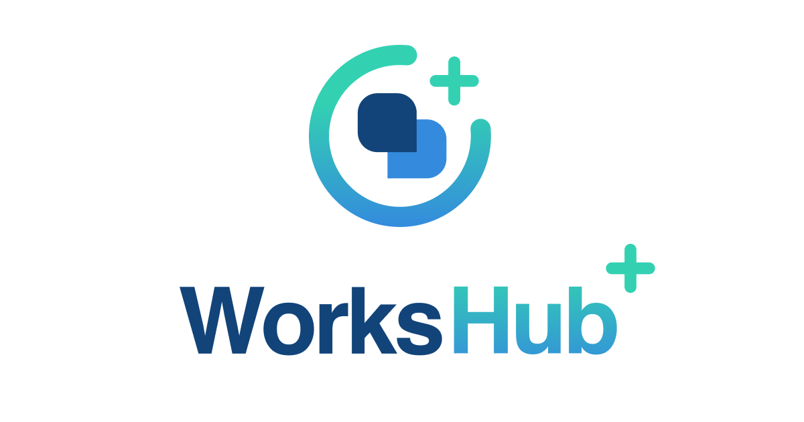
條件<10 ｜通知：外勤人員
職員送簽呈 ｜通知：主管
可追蹤觸發紀錄
03・不分辦公室或第一線
他們都在 LINE WORKS 收到並處理
CAPABILITIES
四種能力，構成企業營運中樞
建構企業治理、服務、整合與洞察的營運能力
GOVERNANCE
組織治理
多層級組織、成員生命週期與角色權限集中維護，
管理範圍依職責自動對齊，異動即時生效。
BOT SERVICES
Bot 應用服務
透過 Bot 市集，將出勤、簽核與內部服務轉化為
員工在 LINE WORKS Bot 即可完成的作業，無需另建 App。
INTEGRATION HUB
系統整合
以連接器市集串接 ERP、CRM、HRM，依資料變動與
業務規則自動觸發推播與流程，整合一次、多處復用。
INSIGHT & AUDIT
洞察與稽核
推播、訊息與選單的使用情形一目了然；每一項操作
皆留有人員、時間、IP 與異動軌跡，隨時可追溯。
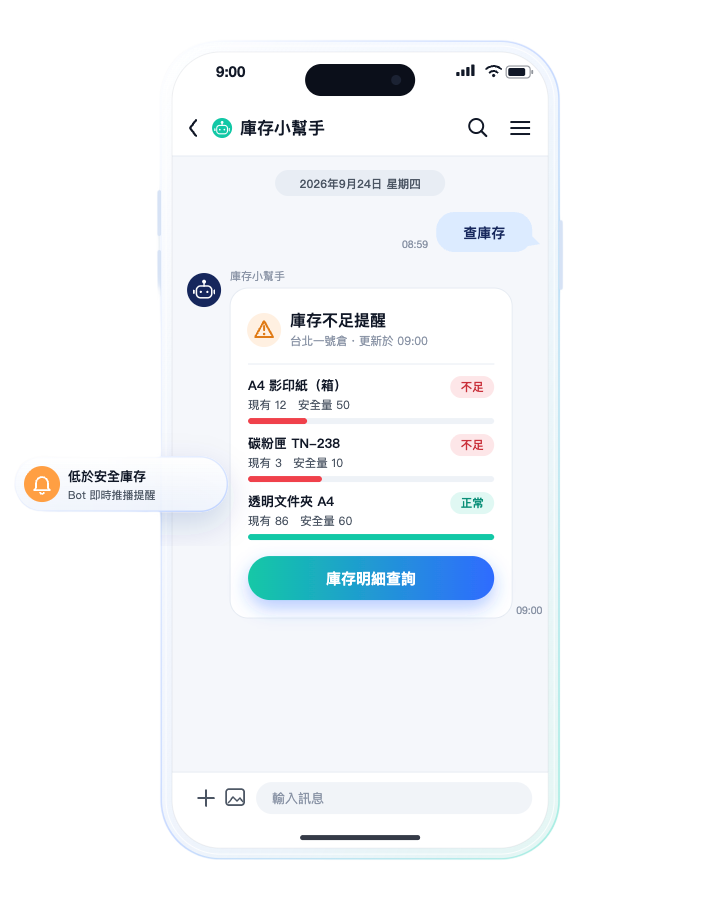
連接器設定
來源系統：ERP
觸發條件：訂單狀態 = 已出貨
推播對象：業務部
正在測試連線確認 ERP 與 WorksHub+ 的連線狀態
BOT AUTOMATION
不必開發 App
也能建立企業服務入口
Bot 市集提供開箱即用的企業流程
整合中台把企業系統接進 LINE WORKS
- 01
Bot 市集
開箱即用啟用打卡、簽核等企業 Bot，預設選單、關鍵字與推播即刻就緒；
管理者可自行調整內容與對象，無需工程資源。 - 02
整合中台
免程式串接IT 人員免程式串接 ERP、CRM 等企業系統，設定資料、條件與觸發規則，
讓系統事件自動轉化為對應人員的推播與流程。
BOT MARKETPLACE
企業常用的流程，已在 Bot 市集就緒
從市集啟用，即刻上線。每一支 Bot 都內建員工端的對話流程，以及管理端的設定與紀錄後台
更多 Bot 陸續上架
上下班不必切換 App，打卡與管理一次完成
員工在 LINE WORKS 完成打卡；HR 在 WorksHub+ 統一管理地點、班別與異常，紀錄自動留存。
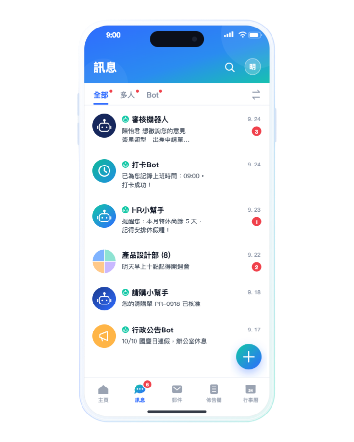
01進入 Bot
從圖文選單開啟出勤服務
→
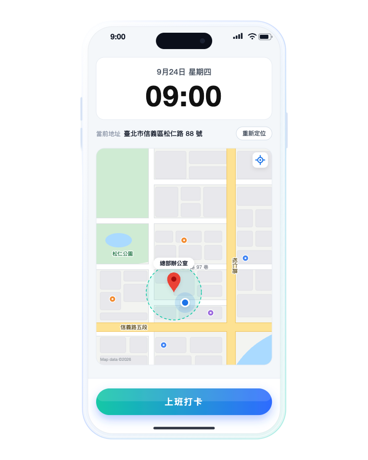
02定位打卡
依企業規則驗證地點與範圍
→
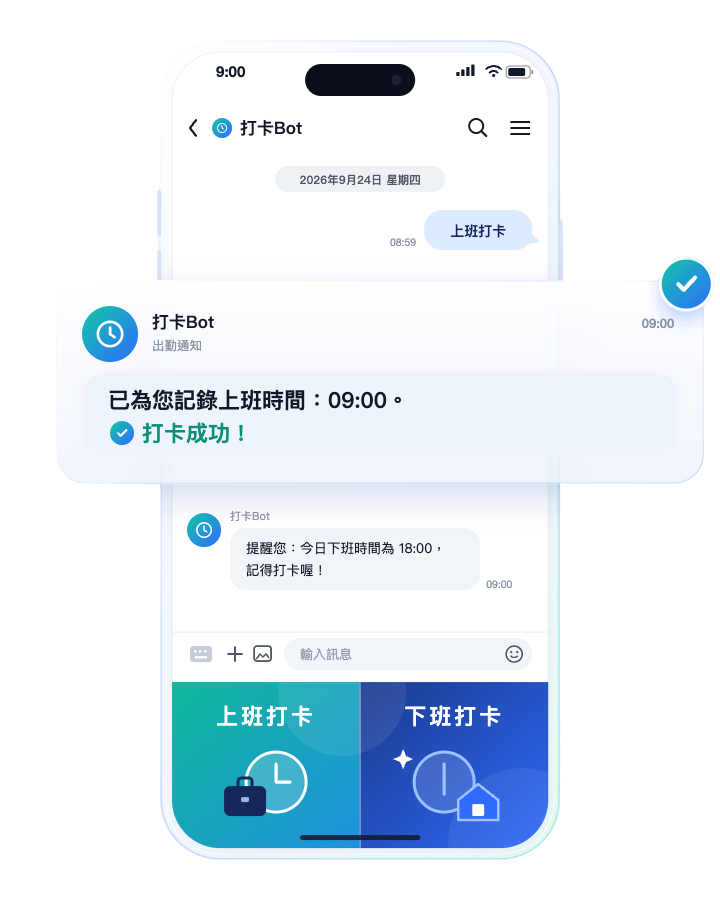
03即時回饋
上下班打卡結果即時通知，異常自動提醒
申請與簽核，在對話中完成閉環
員工在 LINE WORKS 發起申請，簽核人於對話中一鍵核決；進度、結果與歷程自動同步至後台。
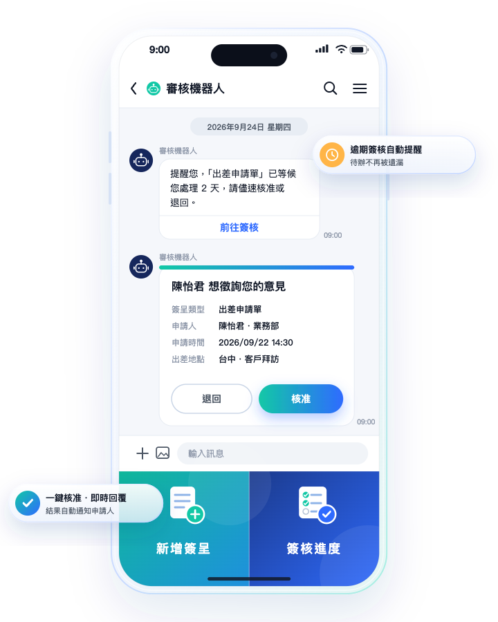
01發起申請
從選單填寫表單，自動帶入申請人資訊
→
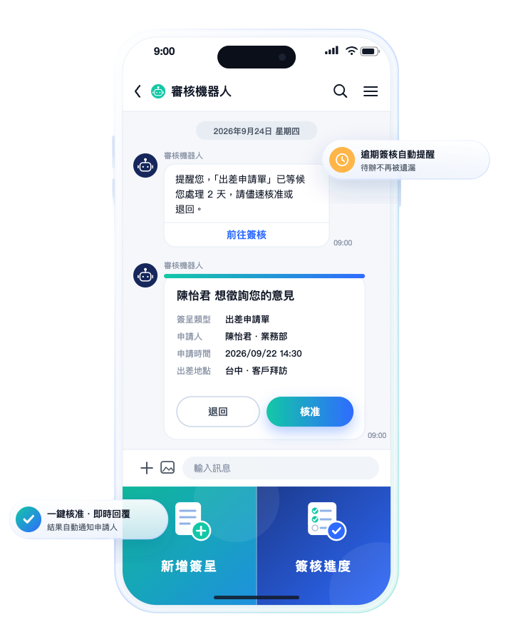
02主管簽核
申請推播至簽核人，在對話中一鍵核決
→
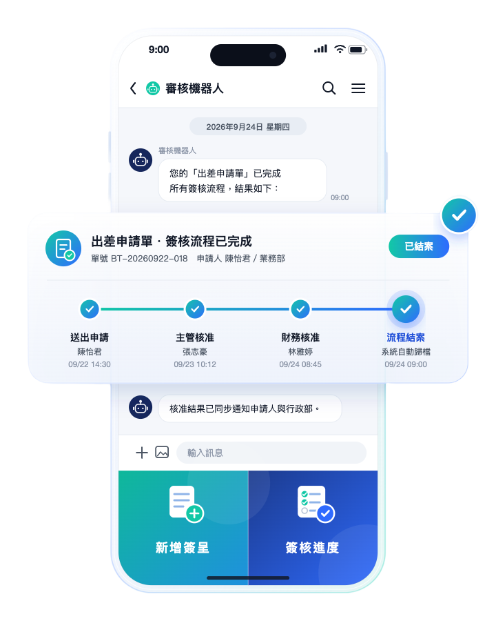
03結果同步
申請人即時收到結果，紀錄自動留存
ENTERPRISE READY
企業帳號、權限與操作，都能被管理
登入、資料區隔與操作軌跡都有具體的管理依據
LINE WORKS 單一登入
沿用既有 LINE WORKS 帳號登入，免除第二套
帳號密碼的維護成本與資安風險。
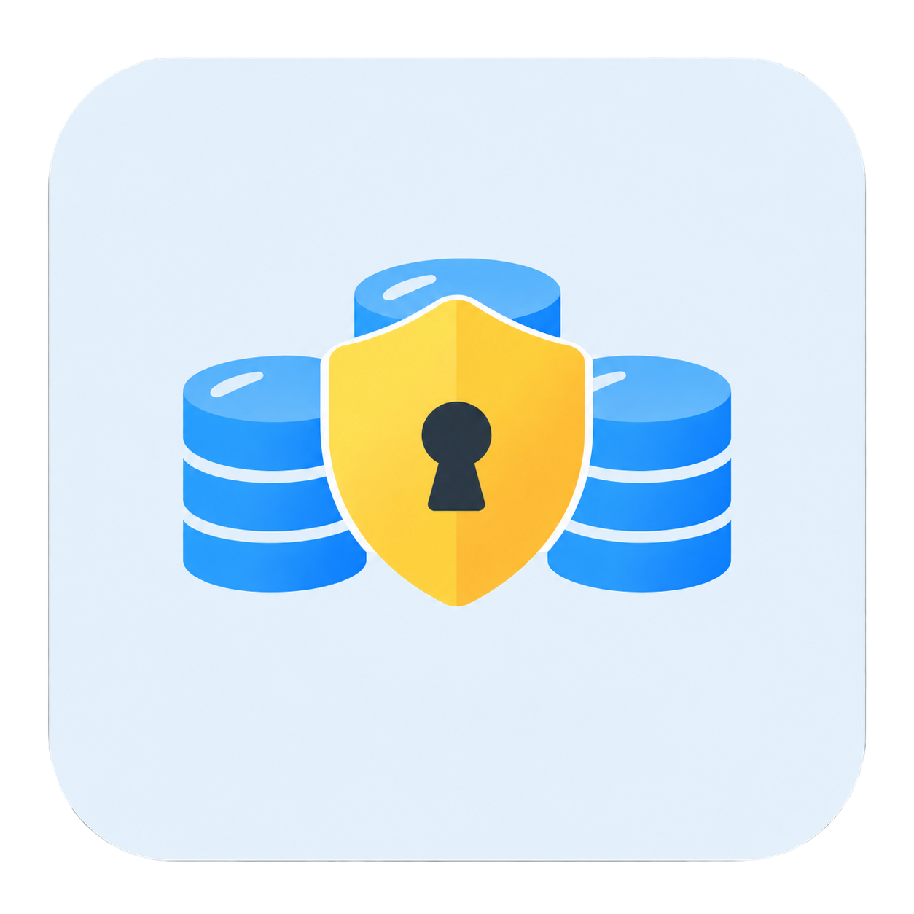
企業資料隔離
每一企業擁有獨立驗證憑證，以 Tenant 機制
確保資料邊界清晰、互不干擾。
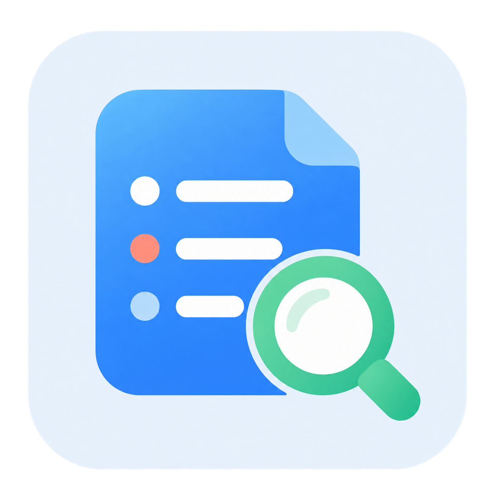
完整操作稽核
操作者、時間、IP 與異動內容完整留存，
方便追溯查核。
FAQ
導入前
您可能想先知道
LINE WORKS 提供溝通與協作；WorksHub+ 在其之上，提供
組織治理、Bot 市集、系統整合與稽核能力。
組織治理、Bot 市集、系統整合與稽核能力。
WorksHub+ 的設計重點之一，是降低企業建置與營運 Bot 的技術門檻。HR、IT 或部門管理者可透過後台管理組織、成員、權限與 Bot 設定，並運用系統串接與事件觸發模組，將 ERP、CRM、HRM 等企業系統的資料與事件，轉化為 LINE WORKS Bot 的通知與工作流程。實際整合方式將依既有系統架構與需求規劃。
WorksHub+ 可以協助企業建立 Bot 推播、關鍵字回覆、圖文選單、預設訊息、出勤打卡、內部問答、部門通知、資源預約通知，以及與 ERP、CRM、HRM 等系統串接後的事件提醒與資料推播。
實際可導入的自動化流程，會依企業既有系統、資料來源與工作場景而定。
實際可導入的自動化流程，會依企業既有系統、資料來源與工作場景而定。
告訴我們您目前的 LINE WORKS 使用方式與希望優化的流程，我們將為您安排專屬展示。
BOOK A DEMO
讓工作不只被看見
更能被完成
告訴我們您目前的 LINE WORKS 使用方式與希望優化的流程，我們將為您安排專屬展示。